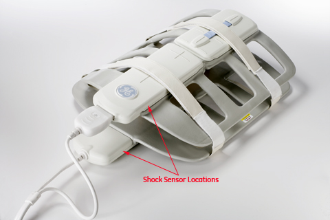
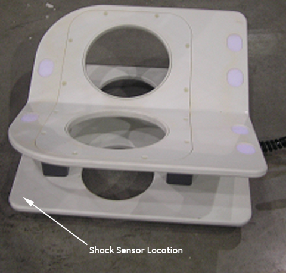
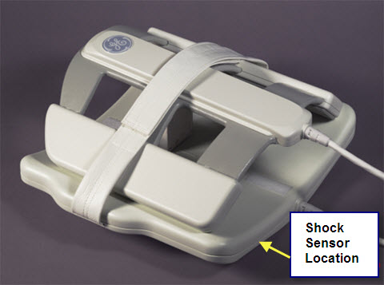
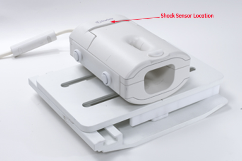
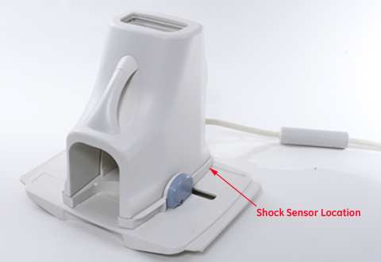
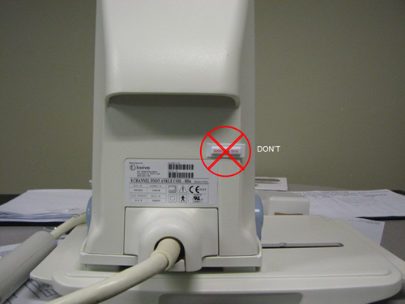
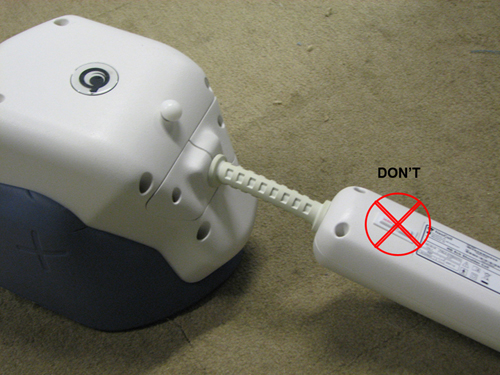

GE Exclusive Use Only
Direction 5500113, Rev# 3
Discovery MR750 3.0T Service Methods
Module Version 7.0, Version Date 6/24/10
GE Exclusive Use Only |
| Required Persons | Preliminary Reqs | Procedure | Finalization |
|---|---|---|---|
| 1 | Not Applicable | 5 (per coil) | 5 mins |
| Item | Qty | Effectivity | Part# | Manufacturer | |
|---|---|---|---|---|---|
| Shock Sensor Sticker | 1 box of 50 | - | 5355839 (75G) and 5337009 (100G) | ShockWatch | |
| Isopropyl Alcohol | 1 | - | 46-183000P164 | - | |
Check Table 1 or Table 2 to see which shock sensor (75G or 100G) should be installed on the coil. Make sure to install the correct shock sensor.
| NOTE: | Only 1 shock sensor should be installed per coil, except for coils that contain 2 or more pieces that can be stored separately, such as the Torso coil and HNS coil. These coils should have a shock sensor on each of the sections. Refer to Illustrations for proper placement. |
| NOTE: | The coils listed in Table 1 and Table 2 are the ONLY validated part numbers that are allowed to have a shock sensor installed. These are coils that are manufactured and/or distributed by GE (Look at the rating plate on the coil for this information). Coils not purchased through GE (E-Cats) are not included and should not have shock sensors installed. |
Table 1: List of 1.5T Coils with Shock Sensors
| Description | Part Number | Sensor |
| 1.5T Prima 9000 8-Channel Body Array | 100393 (label) 2377425-2 (FRU) | 100G |
| 1.5T HDx 12-Channel Body Array - Single Connector | 2416616 (label) 2417327 (FRU) | 100G |
| 1.5T HDx 12-Channel Body Array - Dual Connector | 2415561 (label) 2417331 (FRU) | 100G |
| 1.5T Signa HD 8-Channel Body Array Coil | 2415366 (Label) 2418093 (FRU, Ant) 2416759 (FRU, Pos) | 100G |
| 1.5T 12-Channel Body Array Coil | 2419065 | 100G |
| 1.5T Signa Horizon Pelvic Phased Array Coil w/ cable | 2144100 | 100G |
| 1.5T Torso Pelvis Array Coil | 2298043-2 | 100G |
| 1.5T CV/i Peripheral Vascular | 2293676-2 | 100G |
| USAI 1.5T Flow 7000 Phased Array Peripheral Vascular Coil | 2192406-12 | 100G |
| 1.5T Breast Coil | 46-320785P2/P3 | 100G |
| 1.5T HD Vibrant Bilateral Breast Array Coil | 2401500 (on label) 2412286 (FRU w/o cable) | 100G |
| 1.5T HD 4-Channel Breast Array Coil | 5145567-2 | 100G |
| MRID 1.5 Open Breast Coil | 2246360 | 100G |
| 1.5T 8-Channel Cardiac Array | U1-100391 (on label) 2304255-2 (FRU) | 100G |
| 1.5T Signa HD Cardiac Coil | 2415376 2416896 (FRU, Ant) 2416897 (FRU, Pos) | 100G |
| 1.5T 32-Channel Cardiac Array | 5366664-2 5366664-3 | 100G |
| 1.5T High Res Wrist Coil | 2293670-2 | 100G |
| 1.5T HD 8-Channel Wrist Array | 5160986-2 | 100G |
| 1.5T HD 4-Channel Wrist Array | 5145565-2 | 100G |
| 1.5T HD Lower Leg Coil | 2405289 2414066 (FRU, Right Leg) 2414067 (FRU, Left Leg) | 75G |
| 1.5T HD 16-Channel Lower Leg Array Coil | 2415562 2414066 (FRU, Right Leg) 2414067 (FRU, Left Leg) | 75G |
| 1.5T Knee Phased Array Coil | 46-320406P1 | 100G |
| 1.5T HD Knee Array | 5114356-2 | 100G |
| MedAdv 1.5T Extremity Coil | 2225478 (on label) 2225478-8 (FRU w/ cable) | 100G |
| MedAdv 1.5T Extremity Coil | 2383613 2383613-2 (FRU w/ coil ID) | 100G |
| 1.5T T/R PA Knee/Foot Coil | 2293674-2 2293674-14 | 100G |
| 1.5T HD T/R Quad Extremity Coil | 5147225-2 | 100G |
| 1.5T HD 8-Channel Foot and Ankle Coil | 5308342-2 | 100G |
| GE 1.5T 8 Channel High Resolution Brain Array | 2317112-2 | 100G |
| 1.5T 8-Channel High Resolution Brain Array | 5146634-2 | 100G |
| 1.5T Quad Head Coil (Classic) | 46-282118G2 | 100G |
| 1.5T Head/Neck/Spine (HNS) Coil/ HN (Pos) Unit | 2416329 (Coil) 2417362 (FRU) | 75G |
| 1.5T Head/Neck/Spine (HNS) Coil/ Neck Chest Unit | 2416329 (Coil) 2417360 (FRU) | 100G |
| 1.5T Head/Neck/Spine (HNS) Coil/ TL Unit | 2416329 (Coil) 2417361 (FRU) | 100G |
| 1.5T Quadrature Neurovascular Coil | 2118138 2118138-5 | 75G |
| MRID 1.5T Phased Array Neurovascular Coil | 2225476-2 | 75G |
| MRID 1.5T OPEN Neurovascular Coil | 2293668-2 | 75G |
| 1.5T Quadrature Neurovascular Array Coil | 2330440-2 | 75G |
| GE 1.5T 8-Channel Neurovascular Array | 2317115-2 | 75G |
| 1.5T HD Neurovascular Array | 5117092-2 (with cable) | 75G |
| 1.5T HD 8-Channel Neurovascular Array | 5147135-2 | 75G |
| 1.5T Quadrature T/L Spine Coil | 46-307387P10 | 75G |
| 1.5T Quadrature Cervical Spine Coil | 46-320422P1 | 75G |
| 1.5T CTL Phased Array Coil | 2104799 | 75G |
| USAI 1.5/1.0T CTL Phased Array Coil | 2225545-6 | 75G |
| 1.5T 8-Channel CTL Spine Coil | 2377426-2 | 75G |
| 1.5T Signa HD 8-Channel CTL | 2415375 | 75G |
| 1.5T Shoulder Coil | 46-301058P9 | 75G |
| MRID 1.5T Phased Array Shoulder Coil | 2225252-6 (large) 2225252-7 (small) | 75G |
| 1.5T Mark 9000 Phased Array Shoulder Coil | 2375136-2 | 75G |
| 1.5T Phased Array Shoulder Coil | 2127695 (complete coil) 2100937-17 (anterior) 2100937-19 (posterior) | 75G |
| 1.5T Phased Array Shoulder Coil | 2415364 | 75G |
| 1.5T HD 8-Channel Shoulder Coil | 5308343-2 | 75G |
| 1.5T 3-Channel Shoulder Array | 5344905 | 75G |
| 1.5T GE Signa Infinity Split Head Coil | 2341973 | 100G |
| 1.5T TR Split Top Head Coil | 5182594 | 100G |
| NOTE: | Do NOT install shock sensors on coils made
with fabric or foam, including the following: - 1.5T Flex Coil - 1.5T MNS Phosphorus Flex Coil - 1.5T GP Flex Coil - 1.5T Cardiac Phased Array Coil - 1.5T GE Signa 3-inch Coil - 1.5T GE Signa 5-inch Coil - 1.5T Anterior Neck Coil - 1.5T Posterior Neck Coil - USAI 1.5T Torso Phased Array Coil |
Table 2: List of 3.0T Coils with Shock Sensors
| Description | Part Number | Sensor |
| 3.0T HD Breast Array | 2415544 (on label) 2417367 (FRU) | 100G |
| 3.0T Cardiac Coil | 2411986 U1-100422 (USAi P/N) | 100G |
| 3T 32-Channel Cardiac Array | 5366627-2 5366627-3 | 100G |
| 3.0T 8-Channel Wrist Coil | 5268024-2 | 100G |
| 3.0T HD T/R Knee Array Coil | 5160254-2 | 100G |
| 3.0T GE Signa Quad Extremity Coil | 2357819-2 | 100G |
| 3.0T Signa EXCITE Quadrature Extremity Coil | 2380635-2 | 100G |
| 3.0T T/R Quad Extremity Coil | 5147137-2 | 100G |
| 3.0T 8-Channel Foot/Ankle Coil | 5273235-2 | 100G |
| 3.0T Head Coil | 46-282118G8 | 100G |
| 3.0T GE High Res Brain Array | 2380637-2 | 100G |
| 3.0T 8-Channel High Res Brain Array | 5147134-2 | 100G |
| 3.0T HNS/ HNU | 5325974 (Forward) 5325957 (Upgrade) | 75G |
| 3.0T HNS/ Neck Chest | 5325953-4 | 100G |
| 3.0T HNS/ TL Unit | 5328289 | 100G |
| 3.0T HNS Array | 5338919 | 100G |
| 3.0T 4-Channel Nuerovascular | 2383477-2 (Eclipse) 2383478-2 (Excite) | 75G |
| 3.0T HD Neurovascular Array | 2414390 (on label) 2414386 (Anterior FRU) 2414383 (w/o cable) | 75G |
| 3.0T 4-Channel CTL Array | 2380634-2 | 75G |
| 3.0T Phased Array CTL | U1-100407 (USAi P/N) 2381682-2 (FRU) 2413107-1 (FRU) | 75G |
| 3.0T HD 8-Channel CTL | 2415542 (label) 2417540 (FRU) | 75G |
| 3.0T HD Shoulder Array | 2404877 (on label) 2414362 (FRU) | 75G |
| 3.0T Signa HDx Shoulder Coil | 2414331 (label) 2416878 (FRU) | 75G |
| 3.0T HD 8-Channel Shoulder Coil | 5271265-2 | 75G |
| 3.0T Excite 8-Channel Torso Array Coil | 100401 (on label) 2381683-2 (FRU) | 100G |
| 3.0T HD 8-Channel Torso | 2415410 2418063 (FRU, Ant) 2418064 (FRU, Pos) | 100G |
| 3.0T 32-Channel Torso Array | 5339708-2 5339708-3 | 100G |
| 3.0T GE Signal Infinity Split Head Coil | 2376114 | 100G |
| 3.0T Split Head Coil | 5182872 | 100G |
| NOTE: | Do NOT install shock sensors on coils made
with fabric or foam, including the following: - 3.0T 4-Channel Torso Phased Array Coil - 3.0T GP Flex Coil |
Remove the adhesive backing on the shock sensor. If necessary, clean the surface of the coil with alcohol before applying the shock sensor. Place the shock sensor on the coil based on the location shown in the illustrations below for each type of coil.
| NOTE: | The actual location of the shock sensor on your coil may differ slightly from that shown in the following illustrations. Use your best judgment and the guidelines in Guidelines for Placement when placing the sensor. |
For the following coils, place the sensor per Illustration 1:
1.5T Prima 9000 8-Channel Body Array
1.5T Signa HD 8-Channel Body Array Coil
1.5T 12-Channel Body Array Coil
1.5T Signa Horizon Pelvic Phased Array Coil
1.5T Torso Pelvis Array Coil
1.5T CV/i Peripheral Vascular
USAI 1.5T Flow 7000 Phased Array Peripheral Vascular Coil
Illustration 1: Body Array Coil - Shock Sensor Placement

For the following coils, place the sensor per Illustration 2:
1.5T Breast Coil
1.5T HD Vibrant Bilateral Breast Array Coil
3.0T HD Breast Array Coil
Illustration 2: Bilateral Breast Array Coil - Shock Sensor Placement

For the following coils, place the sensor per Illustration 3.
MRID 1.5 Open Breast Coil
1.5T HD 4-Channel Breast Array Coil
Illustration 3: Open Breast Coil - Shock Sensor Placement

For the following coils, place the sensor per Illustration 4:
1.5T 8-Channel Cardiac Array
1.5T Signa HD Cardiac Coil
Illustration 4: Cardiac Coil - Shock Sensor Placement

For the following coils, place the sensor per Illustration 5.
1.5T 32-Channel Cardiac Array
3.0T 32-Channel Cardiac Array
Illustration 5: 32-Channel Cardiac Array Coil - Shock Sensor Placement

For the 3.0T Cardiac Coil, place the sensor per Illustration 6.
Illustration 6: 3.0T Cardiac Coil - Shock Sensor Placement

For the following coils, place the sensor per Illustration 7:
1.5T High Res Wrist Coil
1.5T HD 8-Channel Wrist Array
1.5T HD 4-Channel Wrist Array
3.0T 8-Channel Wrist Coil
Illustration 7: Wrist Coil - Shock Sensor Placement

For the following coils, place the sensor per Illustration 8:
1.5T HD Lower Leg Coil
1.5T HD 16-Channel Lower Leg Array Coil
Illustration 8: Lower Leg Coil - Shock Sensor Placement

For the following coils, place the sensor per Illustration 9:
1.5T Knee Phased Array Coil
1.5T HD Knee Array
3.0T HD T/R Knee Array Coil
Illustration 9: Knee Array Coil - Shock Sensor Placement

For the following coils, place the sensor per Illustration 10:
MedAdv 1.5T Extremity Coil
1.5T T/R PA Knee/Foot Coil
1.5T HD T/R Quad Extremity Coil
3.0T GE Signa Quad Extremity Coil
3.0T Signa EXCITE Quadrature Extremity Coil
3.0T T/R Quad Extremity Coil
Illustration 10: T/R Quad Extremity Coil - Shock Sensor Placement

For the following coils, place the sensor per Illustration 11:
1.5T HD 8-Channel Foot/Ankle Coil
3.0T 8-Channel Foot/Ankle Coil
Illustration 11: Foot/Ankle Coil - Shock Sensor Placement

For the following coils, place the sensor per Illustration 12:
1.5T 8-Channel High Resolution Brain Array
1.5T Quad Head Coil (Classic)
3.0T Head Coil
3.0T 8-Channel High Res Brain Array
Illustration 12: Brain Array Coil - Shock Sensor Placement

For the following coils, place the sensor per Illustration 13:
1.5T Head/Neck/Spine (HNS) Coil/ HN (Pos) Unit
1.5T Head/Neck/Spine (HNS) Coil/ Neck Chest Unit
1.5T Head/Neck/Spine (HNS) Coil/ TL Unit
3.0T HNS/ HNU
3.0T HNS/ Neck Chest
3.0T HNS/ TL Unit
3.0T HNS Array
Illustration 13: HNS Coil - Shock Sensor Placement

For the following coils, place the sensor per Illustration 14:
1.5T Quadrature Neurovascular Coil
MRID 1.5T Phased Array Neurovascular Coil
MRID 1.5T OPEN Neurovascular Coil
1.5T Quadrature Neurovascular Array Coil
GE 1.5T 8-Channel Neurovascular Array
1.5T HD Neurovascular Array
1.5T HD 8-Channel Neurovascular Array
3.0T 4-Channel Nuerovascular
3.0T HD Neurovascular Array
Illustration 14: NV Array Coil - Shock Sensor Placement

For the following coils, place the sensor per Illustration 15:
1.5T Quadrature T/L Spine Coil
1.5T Quadrature Cervical Spine Coil
1.5T CTL Phased Array Coil
USAI 1.5/1.0T CTL Phased Array Coil
1.5T 8-Channel CTL Spine Coil
1.5T Signa HD 8-Channel CTL
3.0T 4-Channel CTL Array
3.0T Phased Array CTL
3.0T HD 8-Channel CTL
Illustration 15: CTL Coil - Shock Sensor Placement

For the following coils, place the sensor per Illustration 16:
1.5T Shoulder Coil
MRID 1.5T Phased Array Shoulder Coil
1.5T Mark 9000 Phased Array Shoulder Coil
1.5T Phased Array Shoulder Coil
1.5T Phased Array Shoulder Coil
1.5T HD 8-Channel Shoulder Coil
1.5T 3-Channel Shoulder Array
3.0T HD Shoulder Array
3.0T Signa HDx Shoulder Coil
3.0T HD 8-Channel Shoulder Coil
Illustration 16: Shoulder Coil - Shock Sensor Placement

For the following coils, place the sensor per Illustration 17:
3.0T Excite 8-Channel Torso Array Coil
3.0T HD 8-Channel Torso Coil
Illustration 17: Torso Coil - Shock Sensor Placement

For the 3.0T 32-Channel Torso Array coil, place the sensor per Illustration 18.
Illustration 18: 3.0T 32-Channel Torso Array Coil - Shock Sensor Placement

For the following coils, place the sensor per Illustration 19:
1.5T GE Signa Infinity Split Head Coil
1.5T TR Split Top Head Coil
3.0T GE Signa Infinity Split Head Coil
3.0T Split Head Coil
Illustration 19: Split Head Coil - Shock Sensor Placement

Follow these guidelines for proper placement of the shock sensor on the coil.
The shock sensor should not be placed on or near anything that might resemble a handle to ensure that it does not interfere with the lifting or positioning of the coil.
The shock sensor should be placed on a hard surface for proper adhesion.
Place the shock sensor so that it comes in full contact with a flat surface with no edges hanging off the coil as shown in Illustration 20.
Illustration 20: Sensor Should NOT Hang Off Edge

The shock sensor should not come in contact with the patient or any surface that the patient will come in direct contact with during scanning.
Keep the shock sensor far from patient-accessible areas to avoid any part of the patient rubbing against the edges of the shock sensor.
Make sure the shock sensor is visible but in a discreet location.
Do not install the shock sensor to any surface inside of the coil.
Do not cover up an existing label with the shock sensor, as shown in Illustration 21.
Illustration 21: Sensor Should NOT Cover an Existing Label

Do not put the shock sensor on the bottom surface of the coil or a surface that comes in contact with the patient table and/or the LPCA, as shown in Illustration 22.
Illustration 22: Sensor Should NOT Be Attached to a Bottom Surface

Place the shock sensor ONLY on the coil housing that contains the coil elements, not on separate, removable pieces or extensions of the coil, as shown in Illustration 23. For example, do not place the shock sensor on mirrors, the base plate of the coil, cables, and quick disconnects/connectors.
Illustration 23: Sensor Should NOT Be on Separate Pieces or Extensions of the Coil

Return the coils for use to the customer.
Re-use the original packaging of the coil shock sensors for transportation. Order a new box of shock sensor stickers through Coakley if you are running low. Order a couple weeks ahead of your next PM to allow for delivery.